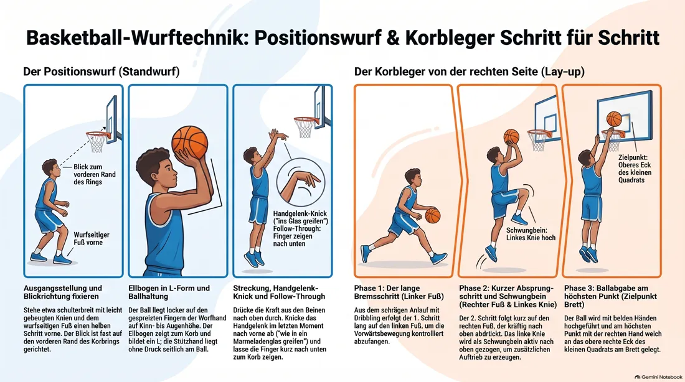
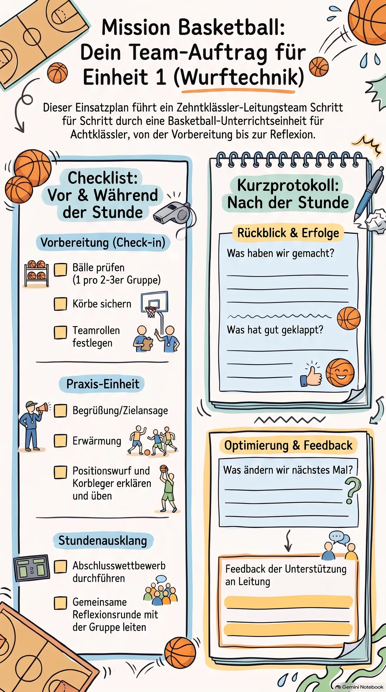

Einsatz 01 · 04 Wurftechnik: Positionswurf und Korbleger
Ihr seid heute das Team für die erste Stunde der Reihe. Lest diese Akte vorher einmal in Ruhe durch, am besten gemeinsam im Team — dann weiß jeder, was wann passiert, auch wenn gerade nicht er oder sie am Reden ist.
Ablaufplan (60 Minuten)
-
0–5
Begrüßung
Kurz vorstellen, Ziel nennen: „Heute geht's um den Positionswurf und den Korbleger.“
Laut und klar sprechen, alle in einen Halbkreis holen. -
5–15
Erwärmung
Lauf-ABC durch die Halle, dabei jeder mit einem Ball: Prellen rechts/links, um Hütchen.
Vormachen, Tempo locker halten. -
15–30
Hauptteil A: Positionswurf
Technik zeigen (Beinstellung, Ellbogen unter dem Ball, Handgelenk nach vorne klappen), dann in 3er-Gruppen an einem Korb üben.
Erst selbst zeigen, dann durch die Gruppen gehen und einzeln korrigieren. -
30–45
Hauptteil B: Korbleger
Schrittfolge erklären (links anlaufen – rechtes Knie hoch – Ball hoch), ohne Ball üben, dann mit Ball an der Linie.
Schrittfolge mehrmals langsam vormachen, erst dann Tempo steigern lassen. -
45–55
Anwendung
Kleiner Stationswettbewerb: wer trifft nach 5 Versuchen Positionswurf + Korbleger am häufigsten.
Punkte selbst mitzählen lassen, auf Fairness achten. -
55–60
Abschluss
Kurze Reflexionsrunde: „Was hat heute gut geklappt?“
Zwei, drei Wortmeldungen reichen.
Beweisfoto: die Technik im Bild

So bereitet ihr euch vor
Ihr müsst die Technik nicht perfekt beherrschen, aber ihr müsst sie klar erklären und vormachen können:
- Positionswurf: wurfseitiger Fuß vorne, Ellbogen bildet ein L unter dem Ball, Stützhand übt keinen Druck aus, Handgelenk knickt am Ende nach vorne ab, Finger zeigen danach zum Korb.
- Korbleger: Schrittfolge „lang – kurz – hoch“ (Bremsschritt, Absprungschritt, Knie hoch), Ball wird am Brett abgelegt, nicht geworfen. Übt vorher beide Seiten, auch wenn ihr selbst eine Seite bevorzugt — ihr müsst beides vormachen können.
Sorgt dafür, dass genug Bälle da sind (idealerweise einer pro Zweier- oder Dreiergruppe) und dass ihr Zugang zu mindestens zwei Körben habt, damit niemand lange ansteht.
Während der Übungsphasen: erst selbst langsam vormachen, dann die Gruppe üben lassen, dann einzeln durchgehen und konkret korrigieren („Ellbogen mehr nach innen“ statt nur „mach's nochmal“). Beim Korbleger lieber zu langsam starten als zu schnell.
Vor der Gruppe stehen — kurz und knapp
Verhaltenskodex
- Stellt euch in einen Halbkreis, sodass ihr alle acht im Blick habt, niemand hinter euch.
- Sprecht lauter und langsamer als sonst, aus dem Bauch heraus, eine Anweisung nach der anderen.
- Legt vorher ein festes Signal fest (z. B. Pfeife einmal = alle hören auf), und wartet danach wirklich, bis es ruhig ist.
- Bei Störungen: ruhig bleiben, die Person direkt und kurz ansprechen, mit Namen und Blickkontakt. Keine lange Diskussion vor der Gruppe.
- Bei größeren Problemen nicht allein durchkämpfen — holt euch Unterstützung aus eurem Team oder sprecht die Sportlehrkraft an.
- Lob nicht vergessen, wenn etwas gut klappt — das wirkt oft mehr als jede Ermahnung.
Euer Checklisten-Auftrag
